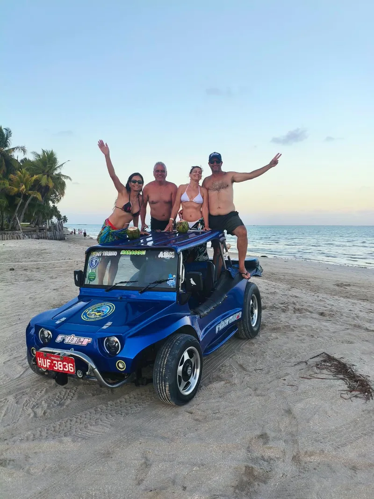

Mais PopularTrajeto Norte — Maragogi
Duração: 2h30minPasseio pelas praias mais famosas do litoral norte com paradas para banho de mar, fotos no coração de coqueiros e letreiros.
- Praia de Barra Grande (Caminho de Moisés)
- Praia de Burgalhau
- Praia do Xaréu
- Praia de Antunes (Coqueirinhos)
- Praia de Ponta de Mangue
Passeio com bugueiro credenciado. Horários flexíveis conforme a sua preferência.
Consultar e Reservar